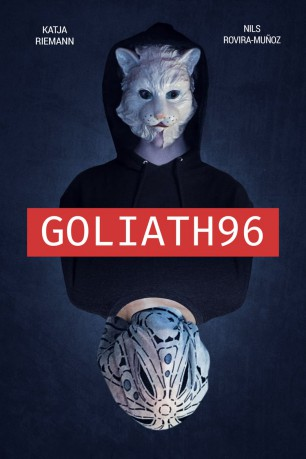

#11941 Goliath96
 
 IMDB-Wertung: 7.1 / 10
IMDB-Wertung: 7.1 / 10  Metascore: 0
Metascore: 0 
Seit über zwei Jahren hat Kristin Dibelius (Katja Riemann) nicht mehr mit ihrem Sohn David (Nils Rovira-Muñoz) gesprochen, obwohl sie beide unter einem Dach leben. David verbarrikadiert sich in seinem Zimmer und lehnt jeden Kontakt kategorisch ab. Das Leben in der gemeinsamen Drei-Zimmer-Wohnung ist zu einem gespenstischen Nebeneinander geworden, dessen Routine jäh erschüttert wird, als Kristin ihre Stelle in der Bank verliert. Entschlossen, die unerträgliche Situation zu beenden, macht sich die alleinerziehende Mutter daran, die Motive für Davids ablehnendes Verhalten zu ergründen. Zufällig erfährt sie von einer alten Freundin ihres Sohnes, dass er in einem Internetforum für Drachenbau aktiv ist. Kristin nimmt Kontakt auf – inkognito. Nach einigem Zögern fasst David Vertrauen zu ihr. Euphorisch vor Glück übersieht Kristin, die mittlerweile fast alle sozialen Kontakte gekappt hat, um mit David zu chatten, dass ihr Sohn beginnt, sich in sie zu verlieben…
Jahr: 2018
Dauer: 109 Minuten
FSK: 12
Land: Deutschland Studio: Little Dream EntertainmentTonspuren: - , - ,
Untertitel:
Auflösung: 1080p (1920x800) Größe: 5580 MB
Genre: Drama
Regisseur: Marcus Richardt
Drehbuch: Thomas Grabowsky, Marcus Richardt
Soundtrack:
Darsteller:
 Katja Riemann als Kristin Dibelius
Katja Riemann als Kristin Dibelius- Elisa Schlott als Fiona
 Jasmin Tabatabai als Monika Picard
Jasmin Tabatabai als Monika Picard- David Wurawa als Jeffery Biko
- Tobias Kay als Jochen Picard
 Erwin Leder als Straßenprediger
Erwin Leder als Straßenprediger- Nils Rovira-Munoz als David Dibeliu
- Joey Marlon Altmann als David (jung
- Stefan Brentle als Supermann
- Saskia Corleis als Fionas Freundin
- Rebekka Ehlers als Heike Müller
- Laura Eichten als Kellnerin
- Nicolas Handwerker als
- Christian R. Meyer als Promoter
- Cynthia Micas als Fitnesstrainerin
- Marie Nasemann als Lilly Scherzinger
- Charles Toulouse als Zuhälter
- Sascha Weingarten als
- Crisjan Zöllner als Davids Vater
Datei: X:\2018(G-M)\Goliath96 (2018, FSK12, 1920x800).mkv seit 26.10.2019
Festplatte: HD 2018(G-Z)-2019(A-Z)
 Es gibt insgesamt 138 Filme in der Gruppe '2018(G-M)'
Es gibt insgesamt 138 Filme in der Gruppe '2018(G-M)'